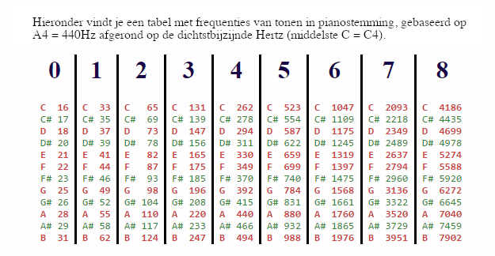

Klinkt beter!#
Geluid#
Geluid is, zoals je misschien al eerder hebt gehoord, een trilling en deze trilling kan te tekenen als een golfbeweging.
Hard geluid heeft een hogere amplitude dan een zacht geluid en bij een hoog geluid hoort een kleinere golflengte
Geluidbestanden#
Afhankelijk van het formaat kunnen audiogegevens op veel verschillende manieren gecodeerd en opgeslagen worden. Het opslaan van een gehele geluidsgolf kost de computer teveel geheugen want hij zou elke punt in zo’n grafiek op moeten slaan. Een van de meest eenvoudige coderingen staat bekend als pulscodemodulatie (PCM), waarbij de geluidsgolven om de zoveel tijd worden gesampled.
Uiteindelijk heb je een lijst van waarden in het bereik -128 tot 127 (als er 1 byte per geluidssample wordt gebruikt) of -32768 tot 32767 (als er 2 bytes voor elke sample zijn). Daarnaast heb je een samplerate dat aangeeft hoeveel samples er per seconde aangeeft afgespeeld moet worden om de normale snelheid te bereiken. Met deze informatie kan de computer de originele geluid herconstructueren.
Geluid programmeren#
We laten twee voorbeelden zien hoe je geluidsdata kan lezen en bewerken. Probeer deze voorbeelden!
Voorbeeld 1: change_speed
De functie change_speed zou aanwezig moeten zijn in wk4ex1.py, zo niet dan kan je het hier kopiëren en in jouw bestand plakken:
# De voorbeeldfunctie change_speed
def change_speed(filename, newsr):
"""change_speed allows the user to change an audio file's speed.
Arguments: filename, the name of the original file
newsr, the new sampling rate in samples per second
Result: no return value, but
this creates the sound file 'out.wav'
and plays it
"""
print("Het originele geluid afspelen...")
play(filename)
sound_data = [0, 0] # een "lege" lijst
read_wav(filename, sound_data) # laad gegevens IN sound_data
samps = sound_data[0] # de samples van de ruwe geluidsgolven
print("De eerste 10 geluidsdruksamples zijn\n", samps[:10])
sr = sound_data[1] # de sampling rate, sr
print("Het aantal samples per seconde is", sr)
# deze regel is niet echt nodig, maar staat hier voor de consistentie...
newsamps = samps # dezelfde samples als eerder
new_sound_data = [newsamps, newsr] # nieuwe geluidsgegevens
write_wav(new_sound_data, "out.wav") # sla de gegevens op naar out.wav
print("\nNieuw geluid afspelen...")
play("out.wav") # speel het nieuwe bestand 'out.wav' af
Lees het voorbeeld door en probeer het met de volgende geluidsbestanden:
In: change_speed("swfaith.wav", 44100) # snelle Vader
# ... aantal regels uitvoer ...
In: change_speed("spam.wav", 11025) # langzame Monty Python
# ... aantal regels uitvoer ...
In: change_speed("swnotry.wav", 22050) # Yoda op normale snelheid
# ... aantal regels uitvoer ...
Hoe werkt deze code?
De geluidsdata wordt in twee onderdelen teruggegeven door de aanroep naar
read_wav, via de regelsread_wav(filename, sound_data) samps = sound_data[0] sr = sound_data[1]
Merk op dat dit losse regels zijn en dat
sound_databegint met de waarde[0, 0]. Wat hier gebeurt is datread_wavde lijstsound_datazo aanpast dat het element met index0de lijst samples bevat en het element met index1de sampling rate (sr).Na deze aanroep bevat de variabele
sampseen grote lijst met ruwe luchtdruksamples (floats). Druk deze lijst niet af, deze is mogelijk te groot en kan IPython vertragen of zelfs doen crashen!Bovendien bevat na de aanroep de variabele
sreen integer waarde met de sampling rate, het aantal samples dat per seconde afgespeeld moet worden om de normale snelheid te bereiken.Er wordt hier en daar wat afgedrukt met
printzodat je iets van de gegevens kan zien.We hebben de nieuwe sampling rate al, dat is het argument
newsr. Voor de consistentie gebruiken we de variabelenewsampsom de nieuwe geluidssamples een naam te geven. In dit geval veranderen ze helemaal niet, maar in sommige latere programma’s zalnewsampsverschillen vansamps.De code schrijft dan
newsampsennewsrweg naar een bestandout.wav, die in de map waar je in bezig bent opgeslagen zal worden. Hierbij wordt een oudere versie van dat bestand overschreven.Ten slotte speelt de functie het nieuwe bestand af, met de nieuwe sampling rate
newsr.
Variaties hierop zul je tegenkomen in alle geluidsfuncties.
Het volgende voorbeeld laat zien hoe je een nieuw geluid kunt creëren door de samples zelf te veranderen. Dat wil zeggen, newsamps zal anders zijn dan samps (de oude samples). Vergeet niet dat samps een zeer grote lijst van luchtdrukwaarden zal zijn ( ongeveer 50.000 elementen).
Voorbeeld 2: flipflop
De functie flipflop zou aanwezig moeten zijn in wk4ex1.py, zo niet dan kan je het hier kopiëren en in jouw bestand plakken:
def flipflop(filename):
"""flipflop swaps the halves of an audio file
Argument: filename, the name of the original file
Result: no return value, but
this creates the sound file 'out.wav'
and plays it
"""
print("Het originele geluid afspelen...")
play(filename)
print("Geluidsgegevens inlezen...")
sound_data = [0, 0]
read_wav(filename, sound_data)
samps = sound_data[0]
sr = sound_data[1]
print("Nieuw geluid berekenen...")
# dit bepaalt het middelpunt en noemt dat x
x = len(samps) // 2
newsamps = samps[x:] + samps[:x]
newsr = sr
new_sound_data = [newsamps, newsr]
print("De nieuwe geluidsgegevens opslaan...")
write_wav(new_sound_data, "out.wav") # schrijf gegevens naar out.wav
print("Nieuw geluid afspelen...")
play("out.wav")
Let op het middelste gedeelte van deze code, waar de nieuwe geluidssamples gemaakt worden op basis van de oude. In dit geval is newsamps een “geflipflopde†versie van de oude samps. Merk verder op dat deze code precies hetzelfde is als de opdracht flipside uit de introductie van functies: flipflop plaatst de tweede helft van het geluid voor de eerste helft!
Bij het schrijven van jouw geluidsbewerkende functies kan je flipflop als startpunt gebruiken.
Opdracht 1:#
Probeer eerst onderstaande functie, die al in het bestand wk4ex1.py zou moeten staan. Je kan dit uitvoeren met test():
# a function to make sure everything is working
def test():
"""A test function that plays swfaith.wav
You'll need swfaith.wav in this folder.
"""
play("swfaith.wav")
Om dit te laten werken, moet jouw Python versie wel geluid ondersteunen (normaal gesproken moet dit geen probleem zijn). Als het niet werkt, is het handig om met iemand samen te werken bij wie het wel werkt.
Het is ook nodig dat het bestand swfaith.wav in dezelfde directory staat als wk4ex1.py. Als je in de directory werkt waar je de bestanden hebt uitgepakt, zou dit zo moeten zijn. Als dat niet zo is, dan kan je de bestanden die je hebt uitgepakt kopiëren naar de map waarin je aan het werk bent.
Opdracht 2:#
Schrijf nu een geluidsbewerkende functie reverse met de volgende signature
def reverse(filename):
...
zodat reverse een filename accepteert, net als flipflop.
Net als bij flipflop moet de sampling rate niet veranderen, maar de functie moet een omgekeerde lijst van geluidssamples maken en deze vervolgens op dezelfde manier verwerken als de twee bovenstaande voorbeelden. Dat wil zeggen dat je ze naar het bestand out.wav wilt schrijven en vervolgens dat bestand wilt afspelen.
Een lijst omdraaien
Vergeet niet dat je in Python samps[::-1] kan schrijven om de lijst samps om te draaien!
Zie het volgende voorbeeld:
In: reverse("swfaith.wav") # redaV htraD klinkt spookachtiger maar minder intimiderend
# ... veel uitvoer ...
Merk op dat deze functie reverse geen gebruik hoeft te maken van de functies die je hiervoor geschreven hebt, maar de volgende functies wel!
Opdracht 3: volume#
Schrijf nu een geluidsbewerkende functie volume met de volgende signature
def volume(filename, scale_factor):
...
zodat volume een filename accepteert zoals gebruikelijk en een floating-point waarde scale_factor. Vervolgens moet volume op de gebruikelijke manier het geluid verwerken, waarbij het uitvoerbestand en het afgespeelde geluid de amplitude (volume) wordt geschaald met de schaalfactor scale_factor. Met andere woorden, elke sample moet worden vermenigvuldigd met scale_factor.
Gebruik de hulpfunctie scale
Gebruik de hulpfunctie scale die je eerder hebt geschreven. Wat je nodig hebt is
newsamps = scale(..., ...)
Dit is een typisch voorbeeld, steeds zullen maar kleine aanpassingen nodig zijn voor elke volgende audio functie die je gaat schrijven.
Zie de volgende voorbeelden:
In [1]: volume("swfaith.wav", .1) # Een rustiger Darth...
# ... veel uitvoer ...
In [2]: volume("swfaith.wav", 10.0) # Een hele drukke Darth!
# ... veel uitvoer ...
Je zult merken dat jouw gehoor zich opmerkelijk goed aanpast aan de veranderingen in het absolute volume van deze functie, waardoor het waargenomen effect aanzienlijk minder is dan je zou verwachten.
Je zult ook merken dat als je het volume te veel verhoogt, het geluid vervormd raakt, net als wanneer een versterker op 11 wordt gezet.
Opdracht 4: static#
Schrijf nu een geluidsbewerkende functie static met de volgende signature
def static(filename, probability_of_static):
...
zodat static een filename (zoals gebruikelijk) en een floating-point waarde probability_of_static accepteert, waarvan je mag aannemen dat deze tussen 0 en 1 ligt.
static moet het geluid op de gebruikelijke manier verwerken, waarbij de uitvoersamples met een kans gelijk aan probability_of_static moeten worden vervangen door een willekeurig getal tussen -32768 en 32767.
Je gebruikt hier de hulpfunctie replace_some die je al eerder hebt geschreven. Je hoeft randomize niet te gebruiken want deze wordt al door replace_some gebruikt!
Zie de volgende voorbeelden:
In [1]: static("swfaith.wav", .05) # Vader, die een tunnel in rijdt
# ... veel uitvoer ...
In [2]: static("swfaith.wav", .25) # Vader op een dial-upverbinding vanuit een galaxy far, far away
# ... veel uitvoer ...
Je zou kunnen uitproberen hoe hoog je het percentage ruis kunt verhogen totdat het origineel niet meer herkenbaar is. Mensen kunnen zich hier minder goed aan aanpassen dan aan volumeveranderingen.
Opdracht 5: overlay#
Schrijf nu een geluidsbewerkende functie overlay met de volgende signature
def overlay(filename1, filename2):
...
zodat overlay twee bestandsnamen accepteert, en een nieuw geluid creëert dat de twee overlapt (combineert). Het resultaat moet net zo lang zijn als de kortere van de twee. (negeer eventuele extra samples, net als in add_scale_2.)
Gebruik de add_scale_2 hulpfunctie om je hierbij te helpen! Op die manier kan je het relatieve volume van de twee bestanden aanpassen. Het is ook mogelijk, maar zeker niet verplicht, om meer argumenten toe te voegen aan de functie overlay, zodat je hiermee de relatieve volumes kan aanpassen (of samples kan bijsnijden, maar dat is lastiger).
Onthoud dat add_scale_2(samps1, samps2, 0.5, 0.5) lijsten (samps) als argumenten accepteert en geen bestandsnamen, dat zijn gewoon strings! De samps zijn lijsten van de ruwe geluidsdata.
Zie het volgende voorbeeld:
In: overlay("swfaith.wav", "swnotry.wav") # Vader vs. Yoda
# ... veel uitvoer ...
Extra: hoe kun je overlay zo aanpassen dat deze het langere geluid niet afkapt? In plaats van het af te kappen, zou je het kunnen laten doorgaan tegen stilte, of je zou het kortere geluid kunnen herhalen?
De volgende functie combineert een bestand met een verschoven versie van zichzelf.
Opdracht 6: echo#
Probeer een geluidsbewerkende functie echo te schrijven met de volgende signature
def echo(filename, time_delay):
zodat echo een bestandsnaam accepteert zoals gebruikelijk en een floating-point waarde time_delay, die een aantal seconden voostelt.
Dan moet echo het geluid op de gebruikelijke manier verwerken, waarbij het originele geluid wordt overlapt door een kopie van zichzelf die in de tijd wordt verschoven met time_delay seconden.
Om de geluiden te laten overlappen zal je add_scale_2 weer willen gebruiken, zoals eerder.
Om de geluiden te verschuiven kan je de sampling rate gebruiken om het aantal samples voor een bepaald aantal seconden te bepalen:
Als bijvoorbeeld
time_delayeen waarde0.1heeft en de sampling rate22050, dan moet je2205samples wachtenOf, als
time_delayeen waarde0.25heeft en de sampling rate44100, dan is het aantal samples dat je moet wachten11025
Stilte toevoegen
De meest gemakkelijke manier om een “wachttijd†aan samples toe te voegen is om een “lege ruimte†of “leeg geluid†aan het begin
van samps toe te voegen, en dit kan je doen door een lijst nullen aan het begin van samps te plaatsen! Bijvoorbeeld,
samps2 = [0] * 42 + samps
zal 42 samples “wachten†door 42 samples zonder geluid aan het begin van de geluidsdata samps toe te voegen.
Je hebt waarschijnlijk een andere waarde dan 42 nodig, de uitdaging is om daar de juiste waarde te berekenen! Hoe zou je er nu achter kunnen komen welke integer waarde je nodig hebt in plaats van 42?
Bedenk dat je weet hoe lang je wilt wachten (in seconden) en wat de sampling rate is (in samples per seconde).
Zorg ervoor dat je een integer gebruikt. Bendenk dat als je een floating-pointg getal
fhebt, je daar een integer van kan maken metint(f).
Terzijde, dit is maar één mogelijke aanpak, er zijn ook andere benaderingen mogelijk voor echo.
Zie het volgende voorbeeld:
In [1]: echo("swfaith.wav", .1) # Hoe veel nullen zijn er aan het begin nodig?
# ... veel uitvoer ...
Opdracht 7: gen_pure_tone#
De laatste voorbeeldfuncties genereren een zuivere sinusvormige toon. Hier is de code, hoewel deze ook in het bestand zou moeten staan:
def gen_pure_tone(freq, seconds, sound_data):
"""pure_tone returns the y-values of a cosine wave
whose frequency is freq Hertz.
It returns nsamples values, taken once every 1/44100 of a second.
Thus, the sampling rate is 44100 hertz.
0.5 second (22050 samples) is probably enough.
"""
if sound_data != [0, 0]:
print("De waarde van sound_data moet [0, 0] zijn.")
return
sampling_rate = 22050
# hoeveel samples we moeten genereren
nsamples = int(seconds * sampling_rate) # naar beneden afgerond
# de factor f om de frequentie te schalen
f = 2 * math.pi / sampling_rate # omrekenen van samples naar Hz
# de factor a om de amplitude te schalen
a = 32767.0
sound_data[0] = [a * math.sin(f * n * freq) for n in range(nsamples)]
sound_data[1] = sampling_rate
return sound_data
def pure_tone(freq, time_in_seconds):
"""Generates and plays a pure tone of the given frequence."""
print("Toon genereren...")
sound_data = [0, 0]
gen_pure_tone(freq, time_in_seconds, sound_data)
print("De nieuwe geluidsgegevens opslaan...")
write_wav(new_sound_data, "out.wav") # schrijf gegevens naar out.wav
print("Nieuw geluid afspelen...")
play("out.wav")
a Bekijk deze code en probeer het uit om een gevoel te krijgen voor wat het doet, hoewel de wiskunde achter de sinusgolf niet cruciaal is.
De belangrijke details zijn dat de functie pure_tone een gewenste frequentie freq en een tijdsduur time_in_seconds accepteert. De wiskundige details worden dan overgelaten aan gen_pure_toon.
Zie het volgende voorbeeld:
In [1]: pure_tone(440, 0.5) # een A van 0,5 seconde in concertstemming
# ... veel uitvoer ...
Je kan de frequenties van andere noten vinden op Wikipedia en op vele andere plekken. Hier is ook een klein overzicht:

Het is interessant om op te merken dat C0 onder het bereik van het normale menselijke gehoor ligt (we kunnen slechts tot ongeveer 20 Hz horen), maar B8 laat veel ruimte over (de meeste mensen onder de 40 jaar kunnen tot 20.000 Hz of hoger horen). Ook gaan de meeste piano’s alleen naar A0 (28 Hz), maar de Bösendorfer Imperial Concert Grand heeft extra toetsen (zwart gekleurd) die helemaal naar C0 gaan. Voor het geval je extra bas nodig hebt!
b Audiofunctie 6: chord
Het laatste probleem is om op basis van het bovenstaande voorbeeld een functie te schrijven die akkoorden maakt, met de volgende handtekening:
def chord(f1, f2, f3, time_in_seconds):
...
zodat chord drie floating-point frequenties f1, f2 en f3 accepteert, en een floating-point getal time_in_seconds voor de tijdsduur.
De functie chord moet een akkoord van 3 noten maken en spelen gebaseerd op deze frequenties.
Je zult drie sets van samps en sr uit gen_pure_tone willen krijgen, bijvoorbeeld,
samps1, sr1 = gen_pure_tone(f1, time_in_seconds, [0, 0])
samps2, sr2 = gen_pure_tone(f2, time_in_seconds, [0, 0])
samps3, sr3 = gen_pure_tone(f3, time_in_seconds, [0, 0])
Vervolgens heb je echt een add_scale_3 functie nodig, hoewel we die nog niet hebben. Maar je kunt deze wel maken! (Je zou add_scale_2 en add_3 als uitgangspunt kunnen nemen, maar we raden aan om add_scale_3 als zelfstandige functie te schrijven, en niet om die andere functies aan te roepen).
Tot slot moet je de resulterende lijst samples nemen (noem deze bijvoorbeeld newsamps) en deze verwerken met behulp van code die je van de vorige functies hebt geleend:
new_sound_data = [newsamps, newsr]
print("De nieuwe geluidsgegevens opslaan...")
write_wav(new_sound_data, "out.wav") # schrijf gegevens naar out.wav
print("Nieuw geluid afspelen...")
play("out.wav")
Zie het volgende voorbeeld:
In [1]: chord(440.000, 523.251, 659.255, 1.0) # A mineur
# ... veel uitvoer ...
Klinkt jouw akkoord vreselijk? Weet je nog wat er gebeurde toen je het volume te veel verhoogde? gen_pure_tone produceert een toon die op maximaal volume staat. Wanneer je twee (of drie) van dergelijke tonen combineert, tellen hun piekvolumes bij elkaar op en het resultaat is te luid voor de computer, waardoor er vervorming ontstaat. Bedenk wat je zou
kunnen doen om hiervoor te compenseren zonder het akkoord te stil te maken. In andere woorden:
Je zult de totale amplitude op
1.0willen houden.Aangezien de amplitude van elk origineel
1.0is, moet je een breuk (fractie) als schaalfactor gebruiken om ervoor te zorgen dat de totale amplitude van de opgetelde golven op 1.0 of minder blijft.Als de amplitude van golf groter is dan
1.0, zal hij “afgekapt†worden door de luidsprekers. Dit klinkt alsof er luide ruis in het geluid zit (of het klinkt gewoon heel slecht).
Uitdaging: Gebruik de bovenstaande frequentietabel om het akkoord te veranderen van een A-mineur naar een A-majoor akkoord. Of maak jouw eigen akkoord…
Maar hoe zit het met het creëren van een C mineur septiem (of overmatig) akkoord?
Inderdaad, je zou grotere akkoorden kunnen maken met willekeurig veel tonen… of andere ongewone/onbelangrijke/inspirerende/verstorende algoritmisch gegenereerde geluidseffecten. We moedigen je zeker aan om dingen uit te proberen! Het is niet vreselijk moeilijk om iets te schrijven dat echte muziek speelt!
Verder uitbreiden
Het kan helpen om functies als a_flat(duration) of cm7(duration) te hebben, en dan iets te schrijven dat daarop voortbouwt.
Inleveren#
Je hoeft voor dit practicum alleen maar het bestand wk4ex1.py in te leveren, niet de andere bestanden die je gedownload hebt.